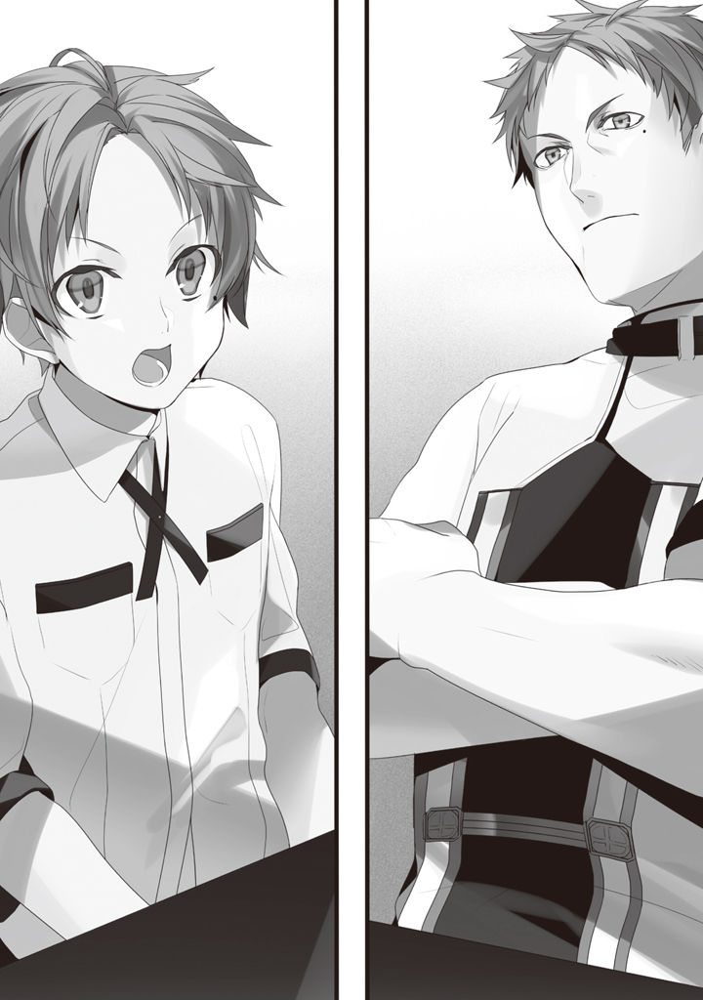

Volume 1 · Unofficial AI-assisted fan translation
Episode 10: Stalled
I turned seven.
My two little sisters, Norn and Aisha, were growing up happy and healthy.
They peed themselves and cried, pooped themselves and cried, got hungry and cried, got vaguely fed up with something and cried, and even when they weren't not fed up, they cried.
Night crying, a given. Morning crying, a given too. Daytime, even peppier: bwaaah, bwaaah.
Paulo and Zenith turned into nervous wrecks in no time flat.
Lilya alone, though, was full of energy,
"This is it, this right here is what child-rearing is! Young Master Rudeus was far too easy! That was not real child-rearing!"
she said, looking after the two of them with practiced hands.
Incidentally, I was used to babies crying at night from my little brother, so it didn't bother me much.
Not to brag, but I've looked after a baby before, with my little brother. I changed diapers briskly and helped with the laundry and cleaning. Seeing me like that, Paulo made a truly pathetic face.
This man, like a Japanese husband from before the war, can't do a single thing around the house.
His sword arm is the real thing, and the village guys trust him thick, and I mean super-thick, but as a papa, he's half-baked through and through.
And this is his second time around... Jeez.
About now, if only to restore Paulo's honor, let me tell you what's amazing about him.
This Paulo, who's nothing but flaws, who by any measure is scum as a human being: I give him his due.
Why? Because he's strong.
First, Paulo's ranks in swordsmanship.
Sword God Style: Advanced
Water God Style: Advanced
North God Style: Advanced
Advanced in all three, in other words.
This Advanced, they say, takes a talented person about ten years of throwing himself into a single school.
Advanced is about the equivalent of fourth or fifth dan in kendo, I think. Intermediate is roughly first to third dan, and for an ordinary knight, Intermediate is said to count as fully qualified. Saint takes the skill of sixth dan and up, the so-called high dan grades, but let's leave that aside.
In other words, Paulo holds fourth dan in kendo, judo and karate, each.
And he quit all of them partway through, at that.
I don't think he's much of a grown-up, but when it comes to strength, he's the certified real deal. What's more, he's still only in his mid-twenties, and he's got a frightening amount of real combat experience.
Words grounded in experience: truly cunning, and practical.
He goes by feel, so I don't understand even half of it, but still, I can tell he's making sense.
I've been learning swordsmanship from Paulo for two years, but I still haven't gotten out of Beginner. Once a few more years pass and I build up stamina, who knows, but as things stand, no matter how much image training I run in my head, I can't picture myself beating Paulo. Even making full use of magic and pulling every trick, I don't feel like I could win at all.
I've seen Paulo fight monsters.
To be exact, I was made to watch. When word came that a monster had turned up, he said, "Watching a fight is experience too," dragged me out by force, and made me watch from far off.
Let me say it straight.
He was insanely, ridiculously, stupidly cool.
The monsters he took on: four.
Dog-type monsters that moved like trained Dobermans, the Assault Dog: three of them.
A boar monster that walked on two legs and had four arms, the Terminate Boar: one of those.
They came out of the depths of the forest, the boar leading the dogs.
Paulo brushed them off like nothing and took each one's head off in a single stroke.
Let me say it once more: he was insanely, ridiculously, stupidly cool.
How do I put it, his way of fighting has flair. Edge-of-your-seat, heart-pounding, or maybe it's that it has a strange sense of rhythm, and it feels good to watch.
I can't put it well in words. If I had to name one word, it'd be charisma.
Paulo's way of fighting has charisma. Enough that I get it: why the menfolk trust him absolutely, why Zenith fell for him and Lilya gave him her body, why Eto's wife has the hots for him.
He's Number One on the village's Men We Want to Be Held By list.
No, setting aside the wanting-to-be-held-by part and all that.
I'm grateful he exists. That there's someone stronger than me close at hand.
If Paulo weren't around, I'd probably have gotten too big for my britches in this world in no time.
Just because I'm a little good at magic, I'd have gone and challenged monsters to fights, failed to pin down an Assault Dog, and gotten brutally mauled to death.
Or else, not a monster, but a person.
Too big for my britches, I'd end up picking a fight with someone I can't beat.
It's a common enough story.
You decide some guy's a villain, set out to smite him, and get cut down in return, that kind of thing.
Swordsmen in this world are off-the-charts strong.
When they get serious, they can run at a top speed of about 50 km/h, and their dynamic vision and reflexes are insane too.
Thanks to healing magic, people don't die easily, so they come at you to kill in one blow.
They're so strong it makes you wonder: in a world where there are such things as monsters, do people really have to be this strong?
What's more, even a guy like Paulo is still only Advanced. Even inside the swordsman bracket alone, there are plenty more above him. Among the people and monsters said to be famous in this world, there are lots that Paulo couldn't beat even if you ganged up a whole pile of Paulos.
There's always someone better.
Paulo's a godsend for teaching me that obvious truth.
Mind you, however many good points he has, at home he's just a useless papa.
The same way an Olympic gold medalist is still a criminal if he breaks the law.
One day, I was getting my sword lesson from Paulo as usual.
Today, again, I can't beat Paulo. I probably won't beat him tomorrow, either.
Lately, I don't feel like I'm improving. But then, if I don't do it, I won't improve.
Even if I can't feel it, it has to be turning into my own flesh and blood.
Probably.
Right? It is, right?
While I was thinking about that, Paulo suddenly raised his voice, as if something had occurred to him.
"Oh, right, Rudy. You, school..."
He started to say it, and stopped.
"...You don't need it. Never mind, let's go again."
Paulo, about to raise his wooden sword again as if nothing had happened.
I wasn't about to let that slip past me.
"What is that, school...?"
"School is an educational institution in Roa, the city in the Fittoa Region. They teach you reading and writing, arithmetic, history, etiquette and so on."
"I've heard of it."
"Normally, kids start going around your age, but... You don't need it, right? You can read and write and do arithmetic already, can't you?"
"Yes, well."
I've made it out that Roxy taught me arithmetic.
With two daughters born, money had gotten a little tight, and when I helped Zenith, who was glaring at the account books, she was hugely surprised. She looked about to start making a fuss about genius this, genius that again, so on the spot I brought up Roxy's name.
As a result, Roxy's standing went up, so I'll call it good.
"But I am interested in school. Children around the same age gather there, don't they? I might make friends."
When I said that, Paulo spat on the ground, ptoo.
"It's not that great a place, you know? Etiquette and all that is just stuffy and useless, there's no point in knowing history, and on top of that you'd get bullied for sure. All the little noble shits from around here gather there, and every last one of them can't stand it if he's not number one. With somebody like you around, they'd gang up and bully you, I bet. 'You, whatchamacallit and lower in rank than I, whose father is Marquis So-and-so, are insolent!' Like that."
Sounds like he's speaking from experience.
The story is that Paulo got sick of his strict father and the ugliness of the nobility, and ran away from home.
That etiquette and history or whatever must be truly unsightly stuff, caked with the vanity of the Asuran nobles.
Even for me, who breathes in step with Paulo, it'd surely be suffocating.
"Is that so. I thought there might be cute girls among the noble young ladies."
"Forget it, forget it. Noble daughters, see, they cake on the makeup, lock their hair down rock-hard, reek of sickly-sweet perfume, and when you finally get one into bed and strip her, she's never done a lick of exercise, so, what do you know, she's got a flabby body. Sure, some of them take up swordsmanship or whatnot and have pretty nice bodies, but mostly they fake it with corsets, so you can't tell till you strip them. Your dad got fooled a few times himself..."
Paulo said it with a faraway look, and his words carried a strange credibility.
What he's saying is scumbag talk, near enough, but if you think of how he went through experiences like that and ended up with a good wife like Zenith, maybe they're words with some depth to them.
"Then I'll pass on going to school."
There's still stuff I want to teach Sylphie, too.
To begin with, going somewhere when you know you'll get bullied is not the act of a sane man.
I didn't spend nearly twenty years holed up over bullying for nothing.
"Right. If it comes to going to school, you're better off becoming an adventurer or something and diving into a labyrinth or something."
"An adventurer...?"
"That's right. Labyrinths are great. No women wearing makeup, so you can tell at a glance if they're pretty. Swordsmen, warriors, mages, they've all got nice, tight bodies, too."
Setting aside the scum's remarks.
According to books, a labyrinth is apparently a kind of monster.
What was originally just a cave mutates as mana builds up in it, and transforms into a labyrinth.
In the deepest part of a labyrinth there's a mana crystal, its source of power, you could say, and a boss to protect it.
The mana crystal is also bait, giving off a powerful pull.
Monsters are drawn by it into the labyrinth, and die by getting caught in traps, starving, or being killed by the boss that protects the mana crystal.
The labyrinth absorbs the mana of the dead monsters.
Then again, a newly formed labyrinth apparently sometimes gets its mana crystal eaten by monsters instead, or caves in every so often and gets crushed.
Hearing about dopey bits like that, it does seem like a living thing.
Also, it isn't just monsters that the mana crystal draws in.
People come swarming too.
Because mana crystals are used as catalysts for magic, they trade at very high prices. It depends on the size, but even a small one fetches enough money to live a life of leisure for a year or more. For monsters, the only treasure is the mana crystal, but for people, that's not the only treasure.
As time passes, a labyrinth pours mana, over many years, into the gear of the monsters and adventurers it has eaten so far.
By doing that, it makes new bait.
That's what a magic item is.
A magic item, unlike a magic tool, is apparently a magical implement you can use without the user putting in any mana. Only, a magic item mostly comes with abilities that are no good at all.
Junk abilities, for the most part, apparently.
But once in a while, apparently, one comes with a cheat ability that would make even God-rank folks go pale.
Things like that bring in a fortune if you sell them, so people dreaming of striking it rich dive into labyrinths.
Most of them run out of strength partway and fall, and the labyrinth takes in the mana and grows deeper and wider.
And so, deep inside labyrinths that have been around a long time, enormous amounts of treasure lie sleeping.
The oldest and deepest one confirmed is the 'Dragon God's Hollow', at the foot of Dragon's Cry Mountain, the sacred peak of the Red Dragon Mountains on the Central Continent. According to the records, it has been around for ten thousand years. Its lowest level is estimated at the 2,500th floor. That labyrinth apparently connects to the hollow at the summit of Dragon's Cry Mountain too, and supposedly, if you jump from the summit into the hollow, you can get close to the lowest level in an instant, but nobody who has gone down that way has ever come back up.
By the way, that hollow at the summit is not a volcanic crater.
The 'Dragon God's Hollow' opened it to catch and devour a red dragon.
Apparently, when a dragon passes overhead, it sucks it in.
How true that is, nobody knows, but for a monster that's lived ten thousand years, it wouldn't be strange to manage that much.
By the way, the labyrinths said to be the hardest are 'Hell' on the Heaven Continent, and the 'Demon God's Grotto' in the middle of the Ringus Sea. Both are in places where even reaching the entrance is hard and you can't resupply properly. They're deep, and on top of that, you can't settle in and explore them at your own pace, so: the highest difficulty.
That's the sum of my knowledge about labyrinths.
"I've read about labyrinths in books."
"'The Three Swordsmen and the Labyrinth', huh. If you could explore a legendary labyrinth like that, you'd leave your name in history. Why not give it a shot?"
—'The Three Swordsmen and the Labyrinth'.
Young genius swordsmen who would later be called the Sword God, the Water God and the North God meet, and after a lot of twists and turns, the three of them take on a giant labyrinth and, in a story with fights and laughs and friendship and partings, brilliantly conquer it.
Even the labyrinth they dove into there only went a hundred floors underground, at most.
"Isn't that just a made-up story?"
"Not at all. In fact, the swords handed down for generations in each school are supposed to be ones they got in that labyrinth."
"Huh. But if people good enough to become God rank had a hard time of it, there's only so much I could do, however hard I tried."
"Your dad managed to dive in. You can do it too, Rudy."
After that, Paulo ran through a bunch of stories for me: one where a young man of the ogre race goes into a labyrinth that's a lair of the sea-fish race, together with human swordsmen, and defeats the sea-fish race even as he loses companions; one where a wizard who'd been called a washout happens to fall into a labyrinth, gets picked up by a party that had just lost its wizard, and grows stronger while awakening his hidden potential; stories like that.
He talked as if he'd been waiting for a chance to tell them.
Come to think of it, Paulo did say he'd wanted to make me a swordsman.
His plan was most likely to tell me stories like those, read me 'The Three Swordsmen and the Labyrinth' and so on, and make me long for keywords like labyrinth, adventurer, swordsman.
Labyrinths. I am interested.
I think they sound fun, but I also think they're too dangerous.
After all, the characters written in that book die out of nowhere.
'The Three Swordsmen and the Labyrinth' has characters besides the three swordsmen.
But everyone except the three swordsmen gets wiped out.
In the middle of a conversation, one gets hit by a fireball flying in from right beside him and burns to a crisp. One suddenly drops into a pit trap and gets turned to mush. One lifts his head a little and the next instant gets cut in two, and so on: guys who don't take so much as a scratch fighting monsters get caught in traps the moment they let their guard down a little, and get wiped out.
The three swordsmen, like proper protagonists, get through the traps with style, but I can't see a scatterbrain like me dodging every trap. I'm the dense type, after all.
"What do you say? Being an adventurer sounds fun too, right?"
"Absolutely not."
Why should I have to go out of my way looking for thrills and do something high-risk?
If I can, in the future I'll live a laid-back life surrounded by girls, like Paulo.
"Chasing after girls' butts is more my speed."
"Oh ho, that's my boy."
"Keeping a whole bunch of them, like you, Father, is my ideal."
"I see, I see. But you'd better stick to chasing just the one butt."
He jabbed a finger at something behind me, and when I turned around, there was Sylphie, pouting.
Bad timing.
Lately I've been teaching Sylphie in my room more and more.
To explain the finer theory of chantless casting, it's quicker to teach her the basics of math and science first.
Mind you, in middle school I was a washout. The dumb-kid high school I barely scraped into, I dropped out of without a second thought, too.
So what I can teach only goes so far.
It's not like book learning at school is everything, but I do regret it: if only I'd studied more.
Sylphie can now do simple reading and writing, and multiplication up to two digits. Teaching her the times tables was a bit of a struggle, but she's not a slow kid. She'll pick up division soon enough.
On top of that, alongside magic, I'm teaching her science too.
"Why does water turn into water va... por? when you heat it?"
"Um, see, air dissolves water. But to dissolve it, you need heat. So the warmer it gets, the easier it dissolves."
Right now I'm teaching her evaporation, solidification, sublimation, and how those processes go.
"............?"
She had a look on her face that said she didn't really get it.
Still, maybe because she's an honest kid, she soaks things up fast.
"W-well, just think of it as: anything melts if you heat it, and hardens if you cool it."
I'm not a teacher, so this is about as good as it gets.
Sylphie is smarter than me. She'll try all sorts of things on her own and figure it out. With magic, she's got no shortage of lab equipment, after all.
"Do rocks and stuff melt too?"
"It takes a super high temperature, though."
"Can you melt them, Rudy?"
"You bet."
I said that, but I've never tried.
Lately, if I put my back into it, I've gotten able to roughly sort out the components of the air. Using that, if I pump in oxygen and hydrogen like crazy, I could probably manage a rock. Doing that, I'd probably half burn myself too, though, so I don't want to.
Incidentally, there's also an Advanced spell called 'Magma Gush' that produces lava.
By any measure it's a combined spell of earth and fire, but it's ranked as Advanced in the fire element. You can say "element" all you want, but everything is interconnected. To raise firepower you can just pour in more mana, but if you use a flammable gas, you can get high firepower far more efficiently.
That much I understand.
But that's as far as it goes.
My skill at magic is not much different from when I parted with Roxy.
Combining existing spells, finding new ways to apply them, simply powering them up with science knowledge.
At a glance, it probably looks like I've leveled up a fair bit.
But I feel like I've hit a dead end. Maybe, with what I know, I can't do anything harder than this. Back when I was alive, whenever I got stuck I looked it up online, but this world has nothing that handy.
Learn from someone, maybe...
"School, huh..."
There's apparently such a thing as a magic school too. Roxy said something or other about the prestige of the magic schools, but could even someone like me get in, I wonder.
"Rudy, are you going to school?"
I'd muttered it without thinking, and Sylphie was looking at me with an uneasy expression, as if peering into my face.
When she tilted her head a little, her green hair swayed softly.
Maybe it was worth it, me dropping hints about once a month, "Maybe you should grow your hair out, huh," because lately Sylphie has started growing her hair just a little.
Right now it's only about a short bob, but her slightly wavy emerald-green hair sways softly at the smallest movement.
Looking good.
Almost ponytail length.
"I'm not planning to go. Father said that if I go to school, I'll just get bullied and won't learn anything."
"But Rudy, lately, you're being weird again."
For real?
I'm not aware of being weird. Did I screw something up?
In front of Sylphie, I'm supposed to be taking the greatest care to play dense, though.
"Apparently I've been weird since the day I was born."
I said it to feel her out, and Sylphie knit her brows and shook her head.
"That's not it, it's like, you're down..."
Ah, that's what she meant.
That had me sweating. I thought I'd given myself away again.
So she was worried about me.
"I've been stuck lately. My magic and my swordsmanship aren't getting any better at all."
"But... you're amazing, Rudy, you know?"
"For my age, maybe."
True, for this world, at this age, I might be amazing.
But I haven't actually done anything yet. Even with magic, it's only thanks to my memories from when I was alive, and to catching on to the thing called chantless casting at the very start, that I can use it a bit better than other people.
But my memories from when I was alive are low-level, so I'm stuck and can't move forward. However many times I regret not studying, I can't go back and relearn it all now. Besides, the common sense of my old world won't necessarily hold in this one. There may be plenty of laws in this world that I don't know about. I can't keep leaning on my memories from when I was alive forever.
Magic is this world's theory.
Then I have to learn about this world.
"I've just been thinking, it's about time I moved on to some next step."
Sylphie's magic keeps getting better and better, and she's getting smarter.
Watching her like that, I start to feel antsy, too. Me being the only one running in place is pathetic.
Right now I'm all high and mighty, going on about being a dense harem protagonist and whatnot, but if I don't grow, Sylphie might give up on me.
"Are you going away somewhere?"
Sylphie asked, frowning.
"Hmm. Father did tell me I'd be better off becoming an adventurer and diving into a labyrinth or something, and maybe there's not much I can do in this village... Go to school, or be an adventurer, which should I go with, I wonder."
I said it lightly.
"N... no-o!"
Sylphie suddenly cried out, and threw her arms around me.
Ah-hnn. What, what, what is it?
A confession of love?
Or so I thought, but Sylphie was trembling in little shivers.
"M-Miss Sylphiette?"
"N-no, no... no!!"
Sylphie hugged me with a strength that hurt.
I was bewildered and went quiet, and what Sylphie felt from that, I don't know...
"D-don't, don't go... waah, uh, waaaahhh"
She burst into tears.
Her small shoulders shaking hard, she clung to me as if pressing her face into my chest.
...What, why? What is this, what's going on?
For now, pat-pat on Sylphie's head, rub-rub on her back.
And while I'm at it, a little on her butt... no, no, I'm not Paulo.
Self-restraint on the butt.
I wrapped my arms tight around her back and savored the feel of Sylphie with the whole front of my body.
Warm and soft. When I buried my face in her hair, it smelled nice.
Ah, this is nice. This is so nice... I want this...
"Hic, no-o, don't go, anywhere, don't gooo..."
Whoa, I came back to my senses.
"Ah, r-right..."
Right. Of course.
Lately, Sylphie has been coming over to our house from the morning more and more.
She comes in the morning, watches my sword practice with a happy face, and then the two of us practice magic or study.
That's the life we've been living.
If one day I'm gone, Sylphie will be all alone again. Even if she can drive off the brats with magic, that doesn't mean she'll make friends.
The moment I thought that, a rush of tenderness for her swelled up inside me.
I'm the only one she likes.
This is mine and mine alone.
"Okay, okay. I won't go anywhere."
Leaving a girl like this behind, where exactly do you think you're going, hmm?
Improving my magic?
Who cares, I can already use Saint and Advanced. If it comes to it, I can be a home tutor or something, like Roxy. Until I'm old enough to stand on my own two feet, I'll stay with Sylphie, the two of us.
Let's do that.
We'll grow up together, the two of us, and little by little I'll raise her into a woman just the way I like.
It's Project Hikaru Genji.
Guhehehehe.
...Gasp!
No, no!! Calm down, calm down.
You decided you were gonna be the dense type, didn'tcha.
What are you getting ideas for...
No, but still.
Just because I'm dense, that's no reason I can't raise my childhood friend... right?
Wait! What am I saying!!
But... grnngh. Just how long am I supposed to go on not noticing this girl's feelings?
She's still only six.
She's attached to me. I can feel that she likes me, too.
But it can't be romantic love in the true sense.
Then, it's h-hold it. Wait for it.
But just how long am I supposed to hold it?
Ten? Fifteen?... Even later...?
And what if, because of that, Sylphie ends up hating me?
Right now her affection meter's maxed out, but there's no guarantee it won't drop from here on.
When that happens, can I take it...?
I... can't do it!!
There are things a man can do and things he can't!!
Because she's this soft. And warm. And fluffy. And all cozy, and she smells nice.
A thing like this is throwing her feelings at me with everything she's got, and I'm planning to pretend I don't notice!?
That's messed up. That kind of thing.
If we're both aware of it, we should go on to the next step.
Instead of me alone gritting my teeth and standing still, we should move forward together!!
You're going to waste your time on the wrong kind of effort?
You know it's wrong, and you're not going to fix it?
I've decided!!
I'm going to raise Sylphie into a woman just the way I like!!
I-I reject the dense type!! Sylphieeee—!!
"Hey, Rudy... there's a letter here for you."
Paulo came in, so I came back from my own 'world'.
I let go of Sylphie in a flash.
That was close. I very nearly turned into a final boss reeking of small fry.
I owe Paulo one.
Still, there's a limit to how long I can hold back what I really feel.
I held out this time, but next time, can I hold out...
The letter was from Roxy.
'To Rudeus.
How have you been?
How time flies: it has been two years since we parted.
I have been able to settle down a little, so I am writing you this letter.
I am currently staying in the royal capital of the Kingdom of Shirone. While I was diving into labyrinths as an adventurer, it seems my name got known before I knew it, and I was hired as home tutor to a prince.
Teaching the prince reminds me of my days with the Greyrat family.
The prince is very much like Rudeus. He is not on Rudeus's level, but his talent for magic is outstanding, and he is clever, too. Also, the way he peeps at me while I change, and steals my panties, is exactly the same. Unlike Rudeus, he is full of energy and haughty, but in how he acts, they really are very much alike.
Is this what they mean by "great men love women", I wonder.
I am worried he may push me down before my term of employment is up.
What anyone sees in a body this scrawny, I really cannot say...
Oh, if anyone found me writing things like this, would it count as lèse-majesté...?
If it comes to that, it comes to that. I do not mean it as an insult, so I should be able to talk my way out of it.
It is only for a limited term, but the royal court seems to intend to appoint me court mage.
I would like to keep on researching magic, so this suits me well.
Oh yes, I have finally become able to use Water King-rank magic too.
There were books on Water King-rank magic in the archives of the Kingdom of Shirone.
When I became able to use Saint rank, I thought I could go no further, but it seems that if you work at it, you can.
I wonder if Rudeus can use something like Water Emperor rank by now. Or perhaps you have gotten the other elements up to Saint rank. Knowing how dedicated you are, you may have tried your hand at healing magic and summoning magic as well.
Or perhaps you have started down the path of the sword.
That would be a pity in its own way, but I am sure Rudeus would do well on that path, too.
I am aiming to become a Water God-rank mage.
As I said before, if you ever hit a wall with your magic, please knock on the gates of the Ranoa University of Magic.
Without a letter of recommendation there is an entrance exam, but for Rudeus it should be a breeze.
Until next time, then.
From Roxy.
P.S. By the time a reply could reach me, I may no longer be at the royal palace, so there is no need to write back.'
The contents felt like a warning shot aimed at where I was right now.
Dammit, I thought, and looked up this Shirone place on the map.
It was a small country toward the east of the southern Central Continent.
In a straight line, it's not all that far. But the mountains of this Central Continent are home to the red dragon, and you can't cross them, so you can't get there without going around the mountains and taking the long way up from the south.
A faraway country.
And Ranoa, where the University of Magic is, can only be reached by a long way around to the northwest.
"Hmm..."
Roxy never taught me a single thing about magic above King rank, but...
Oh, I get it. She didn't know them herself.
I decided to write back with a letter that said nothing much.
I didn't want Roxy to know about my pathetic situation.
I don't know what kind of amazing person I've become in her mind, but the one thing I don't want is to disappoint her.
Still, the University of Magic, huh.
Roxy said before, too, that it's a wonderful place.
But it's far.
I can't leave Sylphie behind.
What to do...
For now, at the end of the letter,
'P.S. I'm sorry I stole your panties.'
I added that.
The day after the letter came, when the whole family was gathered, I brought it up.
"Father. May I make one selfish request?"
"No."
Shot down flat.
Or so I thought, but Zenith, sitting next to him, smacked Paulo on the head with a thwack. Lilya, sitting on his other side, followed up with a hit of her own.
Since the aforementioned pregnancy uproar, Lilya had started sitting at the dinner table with us too. Until then, like a proper maid, she'd stuck strictly to serving during meals, but I guess this means she's been accepted as family.
Is this country okay with polygamy, I wonder.
Eh, whatever.
"Rudy. Go ahead and say anything. Your father will take care of it."
Ignoring Paulo, who was holding his head, Zenith spoke in a kind voice.
"Young Master Rudeus has never said anything one could call selfish until now. I believe this is the moment the master's dignity and his worth as a man are put to the test."
Lilya gave me backup too.
Paulo settled back in his chair, crossed his arms, tipped his chin up with a jerk, and struck a self-important pose.
"If Rudy's going so far as to give a preamble before asking for something selfish, it has to be something huge, way more than I can handle."
Taking a second double strike, Paulo slumped face-down on the table.
Just the usual harmless family joking around.
Now then, time to bring it up.
"Actually, I've hit a wall in learning magic lately. So I'd like to enroll in the University of Magic in Ranoa, but..."
"...Oh?"
"When I hinted at something like that to Sylphie, she cried and said she didn't want to be apart."
"Oho, you ladykiller, who'd you get that from? Eh?"
Paulo took his third double strike.
"Since we have the chance, I'd like the two of us to attend together, but her family is not as well-off as ours. Accordingly, I ask that you pay the tuition for two."
"Hmm..."
Paulo put his elbows on the table and glared at me, eyes glinting sharp like a certain commander's.
Those were the eyes he gets when he's holding a sword.
The eyes of the one and only time Paulo is worth respecting.
"No."
Paulo spat out the same word as before.
This time he meant it.
Zenith and Lilya were both silent.
"There are three reasons.
First, your swordsmanship is only halfway there. Drop it now, and you'll be left so half-baked you'll never be able to learn the sword again. As your sword Master, I can't just toss you aside at this point.
Second, it's a question of money. You alone, we could manage somehow, but with Sylphie too, it's impossible. The University of Magic's tuition isn't cheap, and it's not like our house has money to pour out like water.
Third, it's a question of age. You two are still only seven. You're a smart kid, but there's still a lot you don't know. You're way short on experience, too. I can't throw off my responsibility as a parent and toss you out there."
Figured it was no good.
But, I'm not giving up.
Unlike before, Paulo is properly using his head and giving me his reasons. In other words, if I clear the three conditions, it's a go. No need to rush. It's not like I meant right this minute, either.
"Understood, Father. Then, I'll keep receiving sword lessons from you as before, and as for age, until about what age should I hold out?"
"Let's see... Fifteen, no, stay home until you're twelve."
Twelve, huh.
If I remember right, adulthood in this country is fifteen.
"May I ask why twelve?"
"Because twelve is when I ran away from home."
"I see. Understood."
Twelve must be the line Paulo won't budge on.
So as not to poke at his male pride, I just nodded and kept quiet.
"Then, one last thing."
"Yeah."
"Please find me a job. I can read, write and do arithmetic, so a home tutor, or something as a mage, would be fine. Preferably one that pays as well as possible."
"A job? Why?"
Paulo, his eyes still dead serious, asked as if he were threatening me.
"I will earn Sylphie's share of the tuition myself."
"...That won't do Sylphie any good."
"Yes. But I think it will do me good."
"......"
A silence fell.
Not an atmosphere I found comfortable.
"I see... Makes sense..."
Paulo nodded, mm, as if something had clicked into place.
"All right. If that's how it is, I'll check with some people I know."
In contrast to the uneasy faces of Zenith and Lilya, Paulo said it with the face he wears when he can be trusted.
"Thank you very much."
When I thanked him and bowed my head, dinner started up again.

★ Paulo's point of view ★
I never thought Rudeus would come out with something like that.
My son grows up fast.
Even so, normally a kid only starts saying that kind of thing past fourteen or fifteen, at the earliest.
Even for me, it started around when I made Sword God Style Advanced, at eleven.
The ones who don't say it never say it their whole lives.
"Rush through life too fast, and you'll end up dying young... huh..."
Long ago, there was a warrior who said that to me.
Back then, I just snorted at those words.
The people around me lived way too slow. The stretch when a human has his strength is short, and yet nobody was trying to run. Do everything you can while you can. And if they came down on me for what I did, well, then, after me, the deluge: that's what I thought.
Granted, I did what I could, and what came of it was a kid on the way, so to steady our life I retired from adventuring and leaned on relatives from my noble days to become a knight, but.
Let's set that aside.
Rudeus is living way faster than I did.
Enough that it worries me to watch.
I bet the guys who watched me when I was young thought the same thing.
But unlike me, reckless and winging everything, Rudeus thinks things through properly, with a plan.
That part's Zenith's blood, maybe.
"Still, eh, guess he'll have to stay tied down by his old man a while longer."
With that in mind, I wrote a letter.
Rawls came to me for advice about it the other day too, but Sylphie is glued to Rudeus.
From where Sylphie stands, Rudeus is the prince on a white horse who rescued her from a hellish childhood. He teaches her anything and everything, so she looks up to him like an older brother, and lately, it seems, she's started to see him as a boy, too. Rawls even said something like, if Rudeus takes her as his wife someday, nothing could be better.
At the time, I thought too that having a girl that cute for a daughter wouldn't be so bad, but hearing what Rudeus said today, I changed my mind.
The way things are now is close to brainwashing.
If she grows up like this, Sylphie will turn into a grown-up who can't do anything without Rudeus.
I saw plenty of people like that back in my noble days.
Wooden puppets who leaned on their parents too much.
Even so, it's fine while the one they lean on is around.
Even a wooden puppet can put on an entertaining puppet show, if somebody works it. As long as Rudeus loves Sylphie, Sylphie'll be fine too.
But Rudeus has inherited my blood, and thick.
Womanizer blood.
There's a chance he'll drift off after some other woman on a whim. No, he's got my blood in him; he'll wander, no doubt about it.
In the end, he might not choose Sylphie.
When that happens, the Sylphie left behind won't recover. A wooden puppet with its strings cut can never stand up again.
Because of my son, the life of a girl that cute gets crushed.
That's not something I can allow. It's no good for my son, either.
The letter was done.
Let's pray for a favorable answer.
But, now then.
How am I going to talk that silver-tongued son of mine around...
Might as well just use brute force.